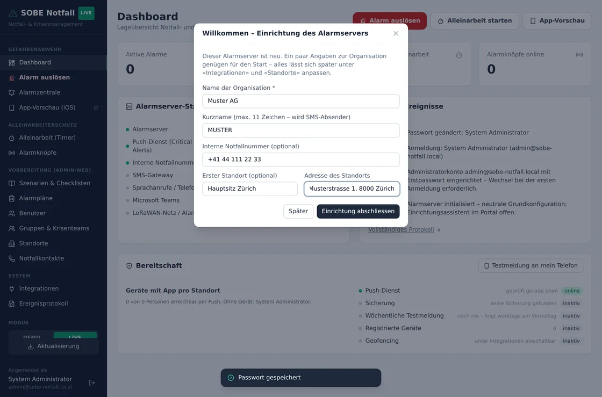
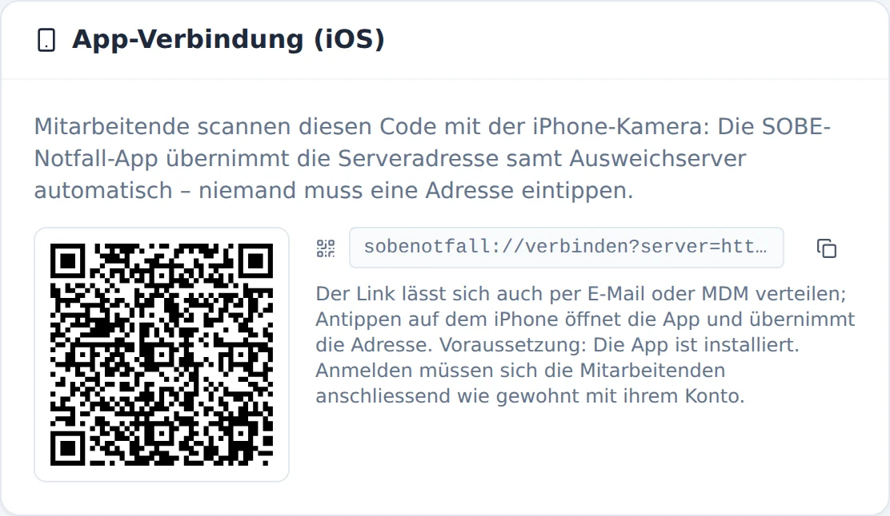
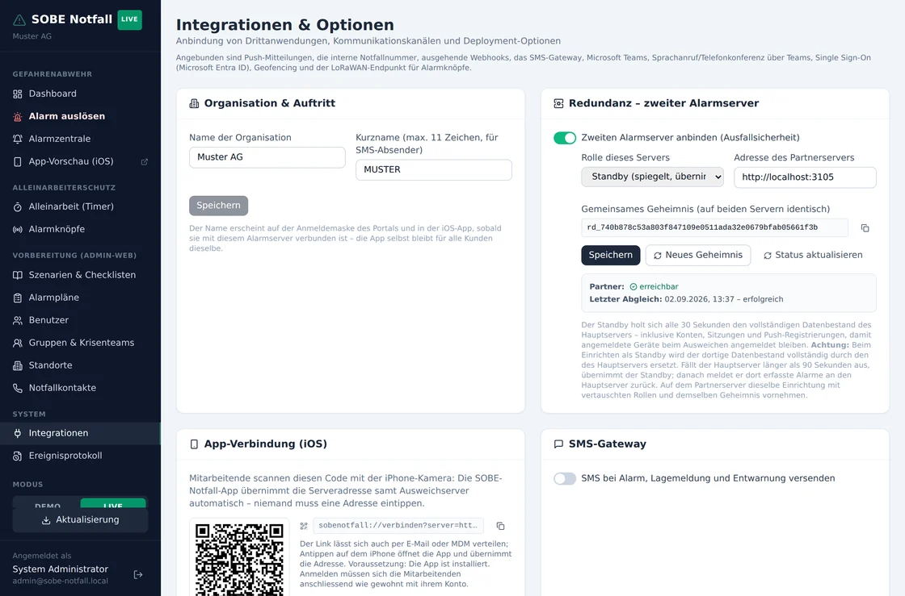

1 Das System im Überblick
SOBE Notfall besteht aus drei Bausteinen. Zwei davon liefert der Alarmserver unter einer Adresse aus – ein Zertifikat, keine CORS-Fragen, und die App braucht nur eine Adresse.
| Baustein | Was er tut | Wo er läuft |
|---|---|---|
Alarmserver (server/) | Konten, Datenbestand, Alarmverarbeitung, Eskalationen, Push-Versand, Schnittstelle unter /api | Node.js-Prozess auf Ihrem Server |
Webportal (src/) | Verwaltung und Alarmzentrale im Browser | wird vom Alarmserver unter / mit ausgeliefert |
iOS-App (mobile/) | Alarme empfangen und auslösen, Szenarien, Alleinarbeit | auf den iPhones der Mitarbeitenden |
Das Betriebsmodell heisst eine App, ein Server pro Kunde: Die App ist für alle Kunden dieselbe und wird nie angepasst. Alles Kundenspezifische – Name, Standorte, Konten, Szenarien, angebundene Dienste – liegt auf dem Alarmserver des jeweiligen Kunden und wird im Portal gepflegt. Die App verbindet sich über eine Serveradresse, die sie per QR-Code übernimmt (Abschnitt 8).
Gut zu wissen
Die Daten liegen in einer einzigen SQLite-Datei. Es braucht keine externe Datenbank, keinen weiteren Dienst – sichern heisst: eine Datei sichern (Abschnitt 11).
2 Voraussetzungen
Drei Dinge müssen stimmen, bevor Sie beginnen.
| Was | Warum | Wie prüfen |
|---|---|---|
| Node.js 22 oder 24 | Die Datenbank (better-sqlite3) bringt fertige Binärdateien nur für diese Versionen mit | node -v |
| Eigene Domain mit HTTPS | Ohne HTTPS gingen Passwörter im Klartext durchs Netz; die App verlangt eine https-Adresse | Zertifikat im Hosting-Panel (z. B. Let's Encrypt) |
| SSH-Zugang und Git | Installiert wird per git clone; nur so funktioniert später der Update-Knopf im Portal | ssh benutzer@server, git --version |
Für den iOS-Build über den Update-Knopf (Abschnitt 11) braucht der Server
zusätzlich ein Zugangstoken von expo.dev (EXPO_TOKEN); für die
Verteilung der App ein Apple-Developer-Konto. Beides ist für den Serverbetrieb
selbst nicht nötig.
Wichtig
Ein reines PHP-Webhosting genügt nicht: Der Alarmserver ist ein dauerhaft laufender Node-Prozess. Es braucht ein Hosting, das eigene Node-Anwendungen veröffentlichen kann, oder einen eigenen (virtuellen) Server.
3 Alarmserver installieren
Die Schritte gelten für jedes Linux-Hosting; die ausführliche, geprüfte
Fassung für das Hetzner-Webhosting steht in DEPLOY-HETZNER.md im
Projektverzeichnis. Rechnen Sie mit 60 bis 90 Minuten.
-
Projekt klonen – in das Verzeichnis, das die Domain ausliefert
(es muss leer sein):
git clone -b main https://github.com/stibe881/sobe-notfall.git . -
Portal bauen – im Projektverzeichnis:
npm installundnpm run build– das Ergebnis liegt indist/. -
Server bauen – im Unterverzeichnis
server/:npm installundnpm run build. -
Einstellungen anlegen –
cp .env.example .envim Verzeichnisserver/, dann die Werte aus Abschnitt 4 eintragen. -
Starten – für den Dauerbetrieb über die mitgelieferte
Startschleife
bash scripts/run.sh(sie startet den Server nach einer Aktualisierung selbständig neu) oder als systemd-Dienst nach der Vorlageserver/scripts/sobe-notfall.service. -
Prüfen –
https://ihre-domain.ch/api/healthmuss{"ok":true}antworten, und unterhttps://ihre-domain.cherscheint die Anmeldemaske des Portals.
Gut zu wissen
Beim ersten Start legt der Server die Datenbank selbst an und befüllt sie: 22 Notfallszenarien, Gruppen, Alarmplan-Vorlagen, die Schweizer Notrufnummern und genau ein Administratorkonto. Standorte und alles Kundenspezifische fragt danach der Einrichtungsassistent im Portal ab (Abschnitt 5).
4 Einstellungen (server/.env)
Alle Einstellungen des Servers stehen in der Datei server/.env –
so geraten Zugangsdaten nie in die Kommandozeile oder in die Versionsverwaltung
(.env ist davon ausgenommen). Nach jeder Änderung den Server neu starten;
beim Start meldet er [env] Einstellungen aus … geladen.
| Variable | Bedeutung | Standard |
|---|---|---|
PORT | Port des Servers – pro Instanz ein eigener | 3001 |
SOBE_DB_PATH | Pfad der Datenbankdatei | data/sobe-notfall.sqlite |
SOBE_WEB_ROOT | Verzeichnis mit dem gebauten Portal | ../dist |
SOBE_ADMIN_EMAIL | Konto des ersten Administrators | admin@sobe-notfall.local |
SOBE_ADMIN_PASSWORD | Erstpasswort dieses Kontos (Wechsel wird erzwungen) | SOBE-Start2026! |
SOBE_PUBLIC_URL | Öffentliche Adresse des Servers – für SSO-Rücksprünge und den LoRaWAN-Endpunkt | aus der Anfrage abgeleitet |
SOBE_SEED_PROFILE | Erstbefüllung: standard (neutral, mit Einrichtungsassistent) oder sonnenberg | standard |
SOBE_BACKUP_DIR | Ordner der Sicherungen (Abschnitt 11) | ~/sicherung |
EXPO_TOKEN | Zugangstoken von expo.dev – nur für den App-Build nötig | – |
GITHUB_TOKEN | Zugangstoken fürs Repository – empfohlen auf Shared Hostings, sonst drosselt GitHub das Holen gelegentlich (Abschnitt 12) | – |
Wichtig
Setzen Sie SOBE_ADMIN_EMAIL auf eine echte Adresse der Kundin oder
des Kunden, bevor der Server das erste Mal startet – das Konto entsteht beim
ersten Start. Das Erstpasswort gilt nur bis zur ersten Anmeldung; das System
erzwingt dann ein eigenes.
5 Erstinbetriebnahme
Öffnen Sie das Portal, stellen Sie oben auf Live und melden Sie sich an. Solange nur das ausgelieferte Administratorkonto mit unverändertem Erstpasswort besteht, nennt die Anmeldemaske beides – ein Klick auf den Hinweis füllt die Felder.

Unmittelbar nach der Anmeldung verlangt das System ein eigenes Passwort (mindestens acht Zeichen, davon eine Ziffer). Danach begrüsst Sie der Einrichtungsassistent: Name der Organisation, Kurzname, interne Notfallnummer und der erste Standort – mehr braucht es für den Start nicht, alles lässt sich später anpassen.

Der Name der Organisation erscheint ab jetzt auf der Anmeldemaske des Portals, in der Seitenleiste und in der App, sobald sie mit diesem Server verbunden ist.
6 Grundkonfiguration
Die fachliche Einrichtung geschieht vollständig im Portal und ist in Handbuch 1 (Administration) beschrieben. Für die Inbetriebnahme hat sich diese Reihenfolge bewährt:
- Standorte vervollständigen: Adressen, Betriebszeiten, für das Geofencing Koordinaten und Radius.
- Gruppen prüfen: Die mitgelieferten Gruppen (Krisenstab, Ersthelfer, Evakuationshelfer …) an die Organisation anpassen.
- Benutzer anlegen – von Hand oder per CSV-Import (
Vorname;Nachname;E-Mail;Telefon;Rolle) – und den Gruppen und Standorten zuordnen. - Szenarien durchsehen: Texte anpassen, nicht benötigte deaktivieren, eigene ergänzen.
- Alarmpläne auf die Standorte beziehen und die Eskalationsstufen prüfen.
- Einen Testalarm als Übung auslösen und die Zustellung in der Alarmzentrale beobachten.
7 Organisation und Integrationen
Unter Integrationen binden Sie die Dienste des Kunden an. Zugangsdaten werden maskiert gespeichert und verlassen den Server nie im Klartext; zu jeder Anbindung gehört ein Verbindungstest.
Logo und Akzentfarbe
Unter Organisation & Auftritt lassen sich pro Kunde ein Logo hochladen (PNG, JPEG, SVG oder WebP, höchstens rund 300 KB, am besten mit transparentem Hintergrund) und eine Akzentfarbe wählen. Beides erscheint auf der Anmeldemaske, in der Portal-Navigation und in der App – ohne dass die App angepasst werden müsste. Das Alarmrot bleibt bewusst bei allen Kunden gleich: Signalfarben für Alarme und SOS sind nicht umfärbbar. App-Icon und Name im App Store bzw. Play Store gehören zum Build und sind für alle Kunden identisch.
| Anbindung | Vom Kunden nötig |
|---|---|
| SMS-Gateway | Konto bei eCall oder ASPSMS (Schweiz) mit Zugangsdaten – oder ein eigenes HTTP-Gateway mit URL-Vorlage |
| Microsoft Teams: Kanalmeldungen | Workflow «Bei Webhookanforderung posten» im Zielkanal; die erzeugte URL hier eintragen |
| Sprachanruf / Telefonkonferenz | App-Registrierung in Entra ID mit den Berechtigungen OnlineMeetings.ReadWrite.All und Calls.Initiate.All |
| Single Sign-On | App-Registrierung in Entra ID; als Umleitungs-URI die Adresse https://ihre-domain.ch/api/auth/sso/callback eintragen |
| LoRaWAN / Alarmknöpfe | Webhook im Netzserver (TTN, ChirpStack) auf den angezeigten Endpunkt mit dem erzeugten Token |
| Geofencing | Koordinaten und Radius je Standort; die Mitarbeitenden stimmen der Standortfreigabe in der App zu |
Gut zu wissen
SSO, Teams und Telefonie laufen je Kunde über dessen eigenen Microsoft-Mandanten – jeder Kunde registriert die Anwendungen in seinem Entra ID mit der Adresse seines eigenen Alarmservers. Es gibt keine geteilte Infrastruktur zwischen Kunden.
8 Die App verteilen und verbinden
Die App gibt es für iOS und Android aus demselben Code – für alle Kunden dieselbe. Auf die iPhones kommt sie über TestFlight oder den App Store, auf Android-Geräte über den Play Store oder als direkt installierbares APK (etwa per Geräteverwaltung). Damit sie mit dem richtigen Server spricht, zeigt das Portal unter Integrationen → App-Verbindung einen QR-Code.

- App installieren (TestFlight-Einladung, App Store, Play Store oder APK der Geräteverwaltung).
- QR-Code mit der Kamera des Telefons scannen – die App öffnet sich und übernimmt die Adresse. Alternativ den Link aus dem Portal per E-Mail oder Geräteverwaltung (MDM) verteilen.
- Mit dem eigenen Konto anmelden. Die App fragt danach die Mitteilungs-Berechtigungen ab.
Hörbare Alarme
iOS: Damit Alarme auch ein stummgeschaltetes iPhone durchdringen, braucht die
App die Berechtigungen für zeitkritische Mitteilungen und Critical Alerts –
Einrichtung siehe mobile/CRITICAL-ALERTS.md; bis dahin kommen Alarme als
normale Mitteilung an. Android: Laute Alarme laufen über den
Benachrichtigungskanal «Alarme», den die App selbst anlegt – höchste Wichtigkeit,
Umgehung von «Nicht stören», und der Ton spielt wie bei einem Wecker über den
Alarm-Audiokanal: Er klingt auch bei Lautlos- und Vibrationsmodus (massgeblich ist
die Wecker-Lautstärke). Eine Sonderbewilligung braucht es nicht.
Android einmalig einrichten
Für Android braucht es einmalig: den Signatur-Schlüssel bei Expo (den ersten
Build interaktiv ausführen, EAS erzeugt und verwahrt ihn), für Remote-Push ein
Firebase-Projekt (FCM) und für die automatische Übermittlung an den
Play Store ein Google-Dienstkonto – Schritt für Schritt in
mobile/README.md, Abschnitt «Android». Den JSON-Schlüssel des
Dienstkontos legen Sie auf dem Server als
mobile/play-service-account.json ab. Sobald diese Datei liegt, baut
und übermittelt der Update-Knopf Android automatisch mit – ohne weitere
Einstellung. SOBE_EAS_PLATFORMS=ios|android|all in
server/.env übersteuert die Automatik bei Bedarf.
Der allererste Android-Build
Die erste App-Datei (.aab) einer neuen App muss einmal von Hand in der Play Console hochgeladen werden (interner Test), bevor Google automatische Übermittlungen des Dienstkontos annimmt – sonst endet die Übermittlung mit «Package not found». Ab dem zweiten Build läuft alles automatisch. Für die Play Console ist ein Entwicklerkonto nötig (einmalig USD 25); firmenintern genügt oft das APK aus dem Preview-Profil.
9 Redundanz: zweiter Alarmserver
Ein zweiter Alarmserver sichert den Betrieb gegen den Ausfall des ersten ab – von Anfang an oder nachträglich, idealerweise auf einer anderen Maschine in einem anderen Rechenzentrum. Der zweite Server (Standby) spiegelt laufend den vollständigen Datenbestand des ersten (Hauptserver) und übernimmt selbständig, wenn dieser ausfällt.
Einrichten
- Zweiten Server nach Abschnitt 3 aufsetzen – eigene Domain (z. B.
notfall2.kunde.ch), eigene Datenbank. Den Einrichtungsassistenten dort einfach schliessen: Die Daten kommen gleich vom Hauptserver. - Auf dem Hauptserver unter Integrationen → Redundanz: einschalten, Rolle Hauptserver, Adresse des Partners eintragen, Speichern. Das erzeugte Geheimnis kopieren.
- Auf dem zweiten Server: einschalten, Rolle Standby, Adresse des Hauptservers und das kopierte Geheimnis eintragen, Speichern.
- Prüfen: Auf beiden Seiten meldet die Karte Partner: erreichbar, auf dem Standby zusätzlich Letzter Abgleich: … erfolgreich.

Wichtig
Beim Speichern der Rolle Standby wird der dortige Datenbestand vollständig durch den des Hauptservers ersetzt – auch Konten und Sitzungen. Sie werden dabei abgemeldet und melden sich anschliessend mit den Konten des Hauptservers an.
Was im Betrieb geschieht
| Lage | Hauptserver | Standby |
|---|---|---|
| Normalbetrieb | verarbeitet alles | spiegelt alle 30 Sekunden den ganzen Bestand – samt Konten, Sitzungen und Push-Registrierungen; Eskalationen und Versand bleiben aus, sonst ginge alles doppelt raus |
| Hauptserver fällt aus | – | übernimmt nach 90 Sekunden: Alarme auslösen, quittieren, eskalieren, Push versenden |
| Hauptserver kehrt zurück | übernimmt wieder die Führung | meldet während des Ausfalls erfasste Alarme, Protokolleinträge und Alleinarbeits-Timer zurück und wird wieder passiv |
Die App kennt beide Adressen – über den QR-Code oder automatisch nach der ersten Verbindung. Fällt der eingestellte Server aus, versucht sie jede Anfrage beim Partner und bleibt dort, bis der Hauptserver wieder antwortet. Weil Sitzungen mitgespiegelt werden, bleiben die Geräte dabei angemeldet; niemand muss etwas tun. Für das Portal gibt es keine automatische Umleitung: Hinterlegen Sie die Portal-Adresse des Standby beim Krisenstab.
Grenze
Während eines Ausfalls auf dem Standby geänderte Verwaltungsdaten (Benutzer, Szenarien, Einstellungen) werden beim nächsten Abgleich vom Stand des Hauptservers überschrieben. Zurückgemeldet werden Alarme, Protokoll und Alleinarbeits-Timer. Verwaltungsarbeit deshalb immer auf dem Hauptserver erledigen.
Failover proben
- Hauptserver stoppen (Dienst anhalten).
- Gut zwei Minuten warten – das Portal des Standby meldet Failover aktiv, das Ereignisprotokoll den Übergang.
- In der App einen Übungsalarm auslösen und quittieren – sie hat unbemerkt auf den Standby gewechselt.
- Hauptserver wieder starten. Nach dem nächsten Abgleich steht der Übungsalarm auch dort im Protokoll, der Standby ist wieder passiv.
10 Weitere Kunden aufsetzen
Jeder weitere Kunde bekommt eine eigene Instanz: eigene Domain, eigenes
Verzeichnis, eigene server/.env mit eigenem PORT und eigenem
SOBE_DB_PATH, eigene Sicherung. Mehrere Instanzen können auf derselben
Maschine laufen; zwischen den Kunden wird nichts geteilt.
| Schritt | |
|---|---|
| 1 | Domain(s) und Zertifikat, Instanz(en) nach Abschnitt 3 mit eigener .env und Datenbank |
| 2 | Erstanmeldung, Passwort gewechselt, Einrichtungsassistent abgeschlossen |
| 3 | Standorte, Benutzer, Gruppen, Alarmpläne erfasst (Abschnitt 6) |
| 4 | Integrationen mit den Zugangsdaten des Kunden eingetragen und getestet (Abschnitt 7) |
| 5 | Redundanz eingerichtet und Failover einmal geprobt (Abschnitt 9) |
| 6 | QR-Code verteilt, Testalarm als Übung mit Quittierung durchgeführt (Abschnitt 8) |
| 7 | Sicherung eingerichtet und eine Wiederherstellung ausprobiert (Abschnitt 11) |
Gut zu wissen
Die kompakte technische Fassung dieser Schritte liegt als
KUNDEN-SETUP.md im Projektverzeichnis – zum Abhaken beim
Aufsetzen.
11 Aktualisierung und Sicherung
Aktualisieren per Knopfdruck
Administratoren aktualisieren den Server aus dem Portal: Der Knopf
Aktualisierung unten in der Seitenleiste holt den neuesten
Stand aus der Versionsverwaltung, baut Portal und Server und startet neu –
Schritt für Schritt nachvollziehbar, mit Protokoll. Auf Wunsch stösst derselbe
Dialog auch den App-Build an (braucht EXPO_TOKEN auf dem Server;
iOS immer, Android automatisch mit, sobald mobile/play-service-account.json
liegt – Abschnitt «Android einmalig einrichten»).
Die Bedienung zeigt Handbuch 1, Abschnitt «Die Anwendung aktualisieren».

git clone (Abschnitt 3).Bei Redundanz
Beide Server sollen denselben Stand haben. Aktualisieren Sie zuerst den Standby, prüfen Sie den Abgleich, dann den Hauptserver – so ist immer eine aktuelle Instanz übernahmebereit.
Sicherung
npm run sicherung im Verzeichnis server/ legt eine in sich
stimmige Kopie der Datenbank an – auch im laufenden Betrieb – und räumt
Sicherungen auf, die älter als 30 Tage sind (Ziel und Frist:
SOBE_BACKUP_DIR, SOBE_BACKUP_TAGE). Richten Sie den Aufruf
als täglichen Cron-Auftrag ein; die Kachel Bereitschaft im Dashboard
zeigt, wann die letzte Sicherung lief.
Wichtig
Die Datenbankdatei nie im laufenden Betrieb von Hand kopieren: Die zuletzt
geschriebenen Daten stehen im Schreibprotokoll (-wal) und fehlten in
der Kopie. Das Sicherungsskript umgeht das.
Wiederherstellen
- Server anhalten.
- Die Sicherungsdatei an den Ort aus
SOBE_DB_PATHkopieren (allfällige-wal- und-shm-Dateien daneben löschen). - Server starten und die Anmeldung prüfen. Ein Standby holt sich den wiederhergestellten Stand beim nächsten Abgleich selbst.
12 Wenn etwas nicht geht
Der Server startet nicht
Meldet der Start einen Fehler zu better-sqlite3, passt die
Node-Version nicht (Abschnitt 2) – node -v muss 22 oder 24 zeigen.
Meldet er EADDRINUSE, läuft auf dem Port bereits ein Prozess: andere
Instanz oder alter Prozess; PORT prüfen.
Aktualisierung scheitert beim «Änderungen vom Repository holen»
Meldet der Schritt «GitHub is temporarily limiting some unauthenticated
downloads», drosselt GitHub unauthentifizierte Abrufe von dieser IP-Adresse
– auf einem Shared Hosting teilen sich viele Kunden dieselbe. Kurzfristig hilft
ein erneuter Versuch nach ein paar Minuten. Dauerhaft: auf GitHub ein
Fine-grained-Token nur für dieses Repository mit der Berechtigung
Contents: Read-only erzeugen und als GITHUB_TOKEN in
server/.env eintragen – der Server holt dann authentifiziert, mit
grosszügigem Kontingent. Das Token erscheint nie im Update-Protokoll.
Portal erreichbar, aber «Alarmserver nicht erreichbar»
Das Portal wurde geladen, die Schnittstelle antwortet nicht. Prüfen Sie
https://ihre-domain.ch/api/health. Kommt dort nichts, ist der
Node-Prozess nicht (mehr) gestartet oder die Weiterleitung des Hostings zeigt
auf den falschen Port.
Die App findet den Server nicht
Die Adresse steht in der App unten auf der Anmeldemaske – Antippen zeigt und
ändert sie. Sie muss mit https:// beginnen und öffentlich erreichbar
sein; am einfachsten den QR-Code aus dem Portal erneut scannen. Meldet die App
bei richtiger Adresse «E-Mail-Adresse oder Passwort ist falsch», obwohl das
Konto stimmt, ist der App-Build zu alt und kennt die Serveranbindung noch nicht.
Der Abgleich der Redundanz schlägt fehl
Die Karte Redundanz nennt den Grund beim letzten Abgleich.
Die häufigsten: Das Geheimnis stimmt auf den beiden Servern nicht überein
(auf einem neu erzeugen und auf dem anderen eintragen), die Partneradresse
ist falsch oder ohne https://, oder eine Firewall lässt die Server
nicht zueinander. Beide Rollen prüfen: genau ein Hauptserver, genau ein Standby.
Der Standby übernimmt nicht
Der Standby übernimmt erst, wenn der Hauptserver länger als 90 Sekunden nicht antwortet – kurze Aussetzer lösen bewusst kein Failover aus. Steht danach kein Failover aktiv in der Redundanz-Karte, war der Hauptserver aus Sicht des Standby erreichbar: Erreichbarkeit zwischen den beiden Maschinen prüfen.
Niemand kommt mehr ins Portal
Auf dem Server hilft npm run reset-admin im Verzeichnis
server/: Es setzt das Passwort des ersten Administratorkontos auf ein
neues Zufallspasswort (auf Wunsch für ein bestimmtes Konto:
npm run reset-admin -- name@firma.ch). Der Aufruf läuft direkt auf der
Maschine und braucht keine Anmeldung.
Push-Mitteilungen kommen nicht an
Die Kachel Bereitschaft zeigt, ob der Push-Dienst erreichbar ist und wie viele Geräte registriert sind. Testmeldung an mein Telefon prüft die Kette bis aufs Gerät. Kommt dort nichts an, ist meist das Gerät nicht registriert (in der App an- und wieder abmelden) oder die Mitteilungs-Berechtigung fehlt (Handbuch 1, «Wenn etwas nicht geht»).